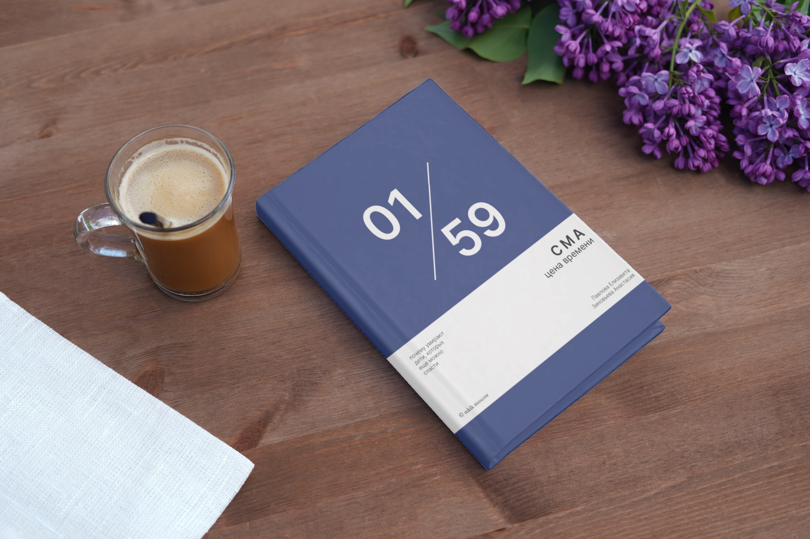
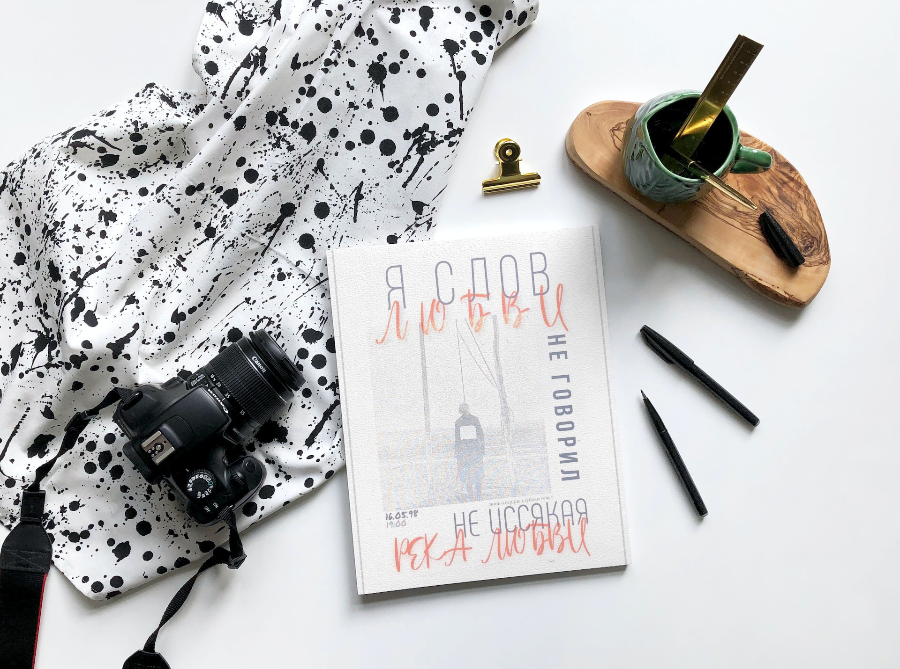
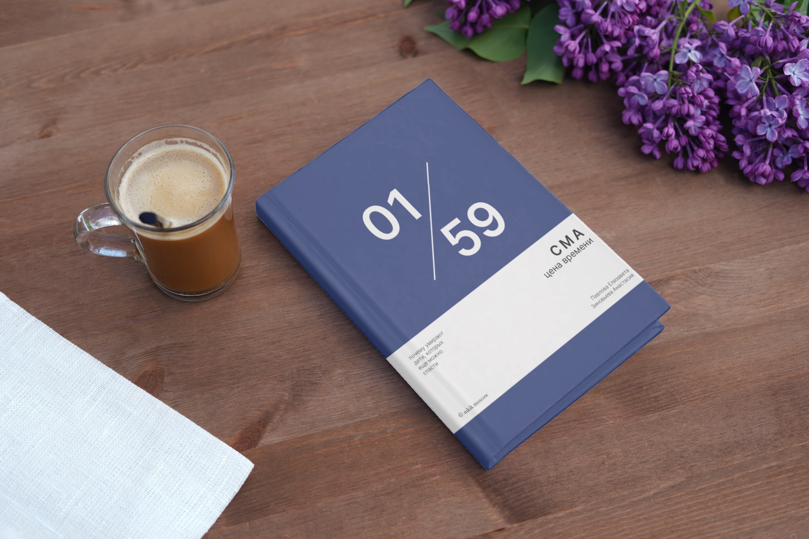
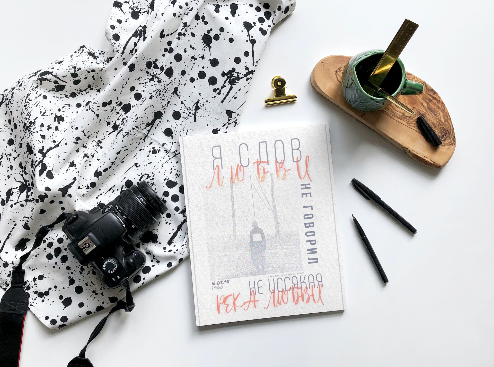

Написание лонгрида о теракте 11 сентября 2001 года
Лонгрид начинался с описания самого теракта: нападения на Всемирный Торговый Центр в Нью-Йорке и Пентагон в Вашингтоне, а также крушения самолета в штате Пенсильвания. Важно было рассмотреть мотивы террористов, а также последствия этих атак на международную политику, безопасность и общественное мнение.
Смотреть проект